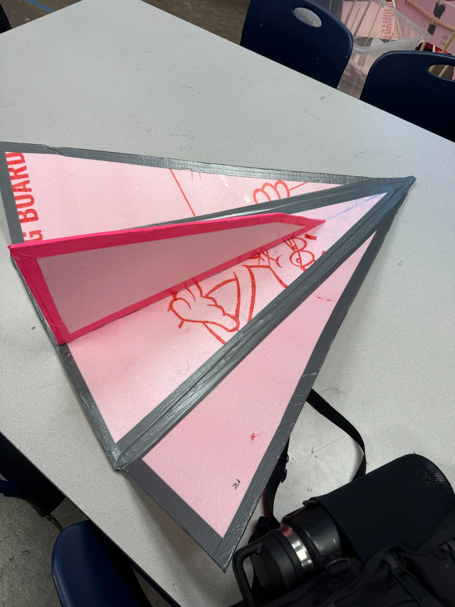

Mechanically Launched Glider — Design, Fabrication & Flight Testing
Led a team through designing a mechanically launched glider from scratch, fabricating the physical prototype, and refining its stability and flight performance through iterative testing.
- My role
- Team lead — design, CAD, fabrication, and testing
- Process
- Design → fabricate → test → iterate → measured flight
- Launch
- Mechanically launched from ground level
- Best documented flight
- 179 ft over 6.35 seconds

Best documented flight
From geometry to a measured flight
Each stage fed the next — the design changed because of what testing showed.
Design
Glider designed from scratch and its geometry developed in CAD.
Fabricate
Physical prototype built from the design and prepared for launch.
Test
Mechanically launched trials flown to see how the glider actually behaved.
Iterate
Stability and flight performance refined across repeated test rounds.
Measured flight
179 ft over 6.35 seconds, recorded from a ground-level launch.
Leading a design-build-test project
I served as team lead on this project and designed the glider from scratch, producing the CAD geometry that the build was based on. From there the team fabricated the physical prototype and put it through repeated mechanically launched test flights.
The interesting part was the gap between the two. A glider that looks correct in CAD does not necessarily fly well, and the only way to find out what needs to change is to throw it, watch what it does, adjust, and throw it again. We worked through that loop to improve stability and flight performance, and the best documented result was a 179 ft flight lasting 6.35 seconds from a ground-level launch.
Launching from ground level matters for reading that number. There was no elevated release to trade altitude for distance — the flight had to come from the launch itself and from how well the glider held its trim once it was in the air.
Glider geometry
The design geometry the prototype was built from.
The built prototype
The physical glider that flew the documented tests.
What I took from it
- Testing is the design tool. The changes that mattered came from watching real flights, not from staring at the CAD.
- Stability first, distance second. Getting the glider to fly predictably was what eventually made a long flight possible.
- Leading a build means keeping the loop short. The faster the team could get from an idea to a thrown prototype, the more we learned per session.
- Measure it or it did not happen. Recording distance and duration turned opinions about which version flew better into something we could compare.